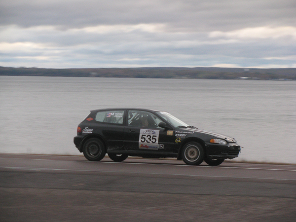
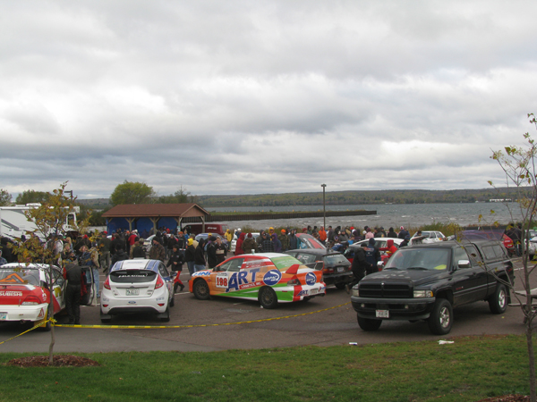
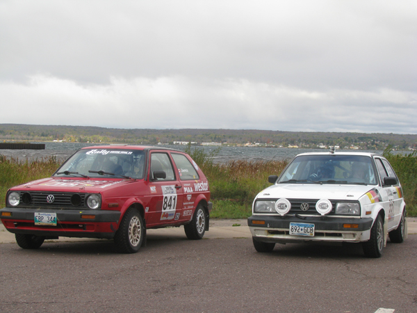
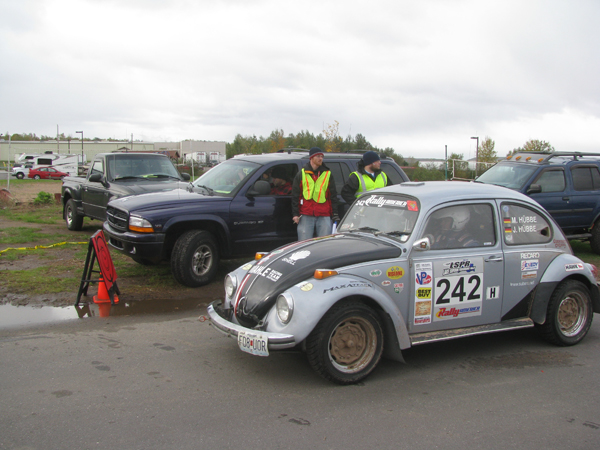

Parc Expose at L'Anse Marina
Welcome to the L'Anse Marina on the shores of Keweenaw Bay. The wind is still whipping, but at least for now the rains are holding off.
Here are comments from some of the MaxAttack! teams this morning.
-Billy Mann, driver of the #37 Honda Civic, reports that they had a bad shunt on the second-to-last stage last night. They bent a control arm. He and co-driver Mary Warren will get a feel for the car, and start pushing harder if it feels good. They are currently running fifth in MaxAttack!, and want to stay in the money.
-Chris Greenhouse and Brian Johnson, in the #319 Plymouth Neon, reported a challenging first night with a good result. They are presently third in MaxAttack!, and the car is still in one piece. They say it would be tougher for the conditions to get much worse than last night.
-Bryan Holder and Tracy Payeur, in the #696 Plymouth Neon, are happy that there is no rain so far today. They are hoping for less muck and a harder-packed road surface.
-The #824 Ford Focus of Cameron Steely and Josh Buller had a fraught first night. They got stuck in the ruts on the last stage of the evening, Bob Lake 2, and were forced to DNF when Medical Sweep took their time cards. Sweep pulled them back out and they could have finished. On Stage 3 last night they had and off and lost their brakes. They were one of the many teams dealing with defroster issues, and had a lot of trouble seeing last night.
-Jeff Secor, co-driver for Chris Czyzio in the #244 Volvo 240, declares with a British accent that it is "a beautiful day for a motorcar race." Last night was a real rally, it harkened back to the old days when you really had to drive. He gives a tip of the helmet to his service crew, who probably got about 90 minutes of sleep last night, so he is thankful to be able to get to do it again.
-Steve Brockelman and Dustin Masters, in the #262 GMC Sonoma, say "so far, so good" for today. They are hoping they might be granted a time allowance for trying to pull the Focus out of the way on Bob Lake 2. They were the worst-ever conditions last night. There is nothing broken with the truck, it's running perfectly, and they are still in it.
-We finally have a report from our friends in car 551, the VW Golf of Kristofer Yahner and Tony Benusa. They went out on the first stage with engine problems, and they hope to keep it running today.
-In our first correction of the second day, we discovered that Car 841, the VW GTI of Daryn Chernick and Matthew Conte, is not, in fact, diesel-powered. The TDI livery on the car refers to a sponsor, who manufactures freezer panels. We apologize for the erroneous information posted last night. But Chernick reports that it was a grueling last night, it was the slipperiest he's ever been in. He takes great satisfaction in getting to the finish; he made it where about 25 cars did not.
-The local L'Anse-based team of Mychal Summers and Ryan DesLauriers hit a big water hole on the last stage of Friday night. They got a bunch of water in the RX-7's mass air flow sensor, and the car ceased to run. They are excited to be in a parc expose in their home town.
-Our second correction of the day involves the #864 Eagle Talon of Erik Hill and Oliver Cooper. It was not, in fact, a half-shaft that put them out. They had an off during Stage 3 (Beacon Hill), and the #573 Honda Civic of Jordan Guitar and Maria Bruen stopped to pull the Talon out, but once freed Hill and Cooper were unable to continue. They thought it was a CV joint, but it turned out that it was actually the transmission that failed. The crew got it fixed and they are back today. It actually turned out to be a fairly heroic effort on the crew's part. The new gearbox was from a turbo talon, and theirs is normally-aspirated. So as well as changing the gearbox, they also had to swap the flywheel and the clutch. They also report that Beacon Hill was so slippery, that at one point they needed two trucks to tow them up a hill, because one truck alone could not get enough traction to get them to the crest.
-Jake Blattner, co-driver to Dillon Van Way in the #600 Ford Fiesta, reports that the first day was awesome except for the bad stuff. They had no visibility and no clutch. Even with a sequential gearbox they still needed the clutch, which went from slipping to nothing. Jake adds that muddy and slippy are always good in rally.
-Matt Hiles, co-driver for his brother Silas in the #535 Honda Civic, confesses that he has "nothing smart to say." The brothers are excited about today, as these are the stages they were looking forward to.
-David Grenwis, driver of the #654 VW GTI with co-driver Drew Burkholder, had a rough first night. They did not finish. They wish other MaxAttack!'ers the best of luck today. They will Press on Regardless, in classic U.P. spirit.
-The #242 Volkswagen Beetle of Mark and John Huebbe has an ignition problem. Mark is worried that they might not be able to finish today.
-Ian Seppanen, driver of the #240 Nissan 240SX, says that it was muddy last night and it rained a lot, but that they didn't notice. They were part of the group of six cars, all two-wheel-drive, buried in the mud of Bob Lake 2 so they were not classified as finishers. They are ready for some fun today, when it should be faster and drier.
Cars are now starting to check out of the first service in L'Anse, so we should have some news from today and results to pass along shortly. In the mean time, we have some pictures.

Silas and Matt Himes drive along Keweenaw Bay to get to Parc Expose in L'Anse

Parc Expose at the L'Anse marina

The VW GTI's of Daryn Chernick/Matt Conte and Kristofer Yahner/Tony Benusa ready to start Day 2

Mark and John Huebbe getting ready to leave the L'Anse MTC and head to the stages